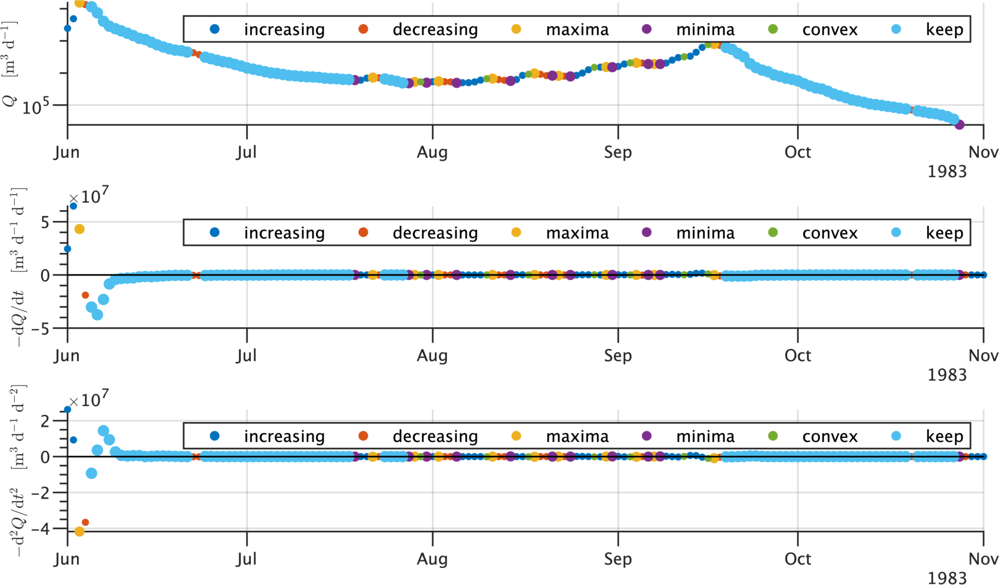
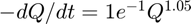

Baseflow Recession Analysis Toolbox Examples
These examples provide an introduction to the toolbox. The purpose of these examples is to demonstrate a typical use-case for each function in the bfra toolbox, with an emphasis on toolbox breadth. To explore the toolbox functions in more detail, see the function documentation and extended example docs in the demos folder.
Contents
Introduction
In this example, we use baseflow recession analysis to investigate daily streamflow data measured in the Kuparuk River Basin on the North Slope of Alaska. We will use observations of daily streamflow provided by the United States Geological Survey, recorded at streamflow gage 1596000. The data can be downloaded from https://waterdata.usgs.gov/monitoring-location/15896000 and are included as a sample dataset with this toolbox.
Preparing data for analysis
The minimum required information includes the timeseries of daily streamflow and the drainage area of the upstream river basin. Values for drainage density, stream channel length, basin slope, and soil (or aquifer) thickness are also used by the toolbox.
Set the sitename.
sitename = bfra.basinname('KUPARUK R NR DEADHORSE AK');
Set the basin area and geomorphological parameters.
Dd = 0.8; % drainage density A = 8.6545e9; % basin area [m2] L = A*Dd/1000; % active stream length
Load streamflow data for the test basin into the workspace. In the sample dataset, the variable T is time, Q is discharge, and R is rainfall.
load('data/dailyflow.mat','T','Q','R');
Detecting recession events from timeseries of daily streamflow
The toolbox supports three main tasks: event detection, event curve-fitting, and event distribution fitting. The setopts function provides users with an interface to set options that control the algorithms used to implement these tasks. Default values are set automatically.
In addition to the basin drainage area, drainage density, and stream channel length, we will set the 'isflat' parameter true, which indicates that slope is not included in the underlying theoretical solutions to the groundwater flow equation, and we will ask to plot the fitted results by setting the plotfits parameter true.
Set the algorithm options.
opts.Events = bfra.setopts('getevents'); opts.Fits = bfra.setopts('fitevents'); opts.Global = bfra.setopts('globalfit','drainagearea',A,'streamlength',L, ... 'drainagedens',Dd,'isflat',true,'plotfits',true);
To demonstrate the event detection algorithm, subset one year of data.
T = T(1:365); Q = Q(1:365); R = R(1:365);
getevents is the entry-point function for detecting recession events. It calls eventfinder and eventsplitter to detect events and return quality-controlled events suitable for fitting.
[Events,Info] = bfra.getevents(T,Q,R,opts.Events);
Plot the detected events
[h,f] = bfra.eventplotter(T,Q,R,Info,'plotevents',true); axis tight
Error using bfra.eventplotter Too many output arguments. Error in bfra_demo (line 72) [h,f] = bfra.eventplotter(T,Q,R,Info,'plotevents',true); axis tight
Set the y-axis to log-scale and trim the xlimits to see the data more clearly
set(h.ax(1),'YScale','log'); set(h.ax,'XLim',[datetime(1983,6,1),datetime(1983,11,1)])

Three events can be seen in the figure. We can also learn this using the utility function numevents
bfra.util.numevents(Events)
Fit the events.
[K,Fits] = bfra.fitevents(Events,opts.Fits);
Examining events in detail
Examine the third event in more detail. The fit results returned in K include parameters that represent solutions to the event-scale recession flow equation -dq/dt = aQb. Print that to the screen using a latex-formatted character array.
bfra.aQbString([K.a(3) K.b(3)],'printvalues',true);

% % Plot the event % hEvent = bfra.checkevent(T,Q,Fits.q,Fits.dqdt,R,Fits.eventTags,3); % % % Pull out the event data % eventData = bfra.getEventsData(Events,3); % fitData = bfra.getFitsData(Fits,3); % % % Compare the fit using non-linear least squares to ordinary least squares % Fit_nls = bfra.fitab(fitData.q,fitData.dqdt,'nls','plotfit',true); % Fit_ols = bfra.fitab(fitData.q,fitData.dqdt,'ols','plotfit',true); % % % The non-linear least squares fit returns an exponent that is lower than the % % linear least-squares fit % Fit_nls.b % Fit_ols.b % % % Set the y-axis to linear scale to why the large values may be influencing the % % non-linear fitting result % Fit_nls.h.ax.YScale = 'linear'; % % % Set the y-axis back to log scale % Fit_nls.h.ax.YScale = 'log'; % % % Add a reference line with slope b = 3 representing the theoretical early-time % % solution to the Boussinesq equation for aquifer discharge % bfra.plotrefline(fitData.q,-fitData.dqdt,'ax',Fit_nls.h.ax,'refline','earlytime'); % % %% Estimate aquifer properties % % b_early = 3; % b_late = Fit_ols.b; % a_early = bfra.pointcloudintercept(fitData.q,fitData.dqdt,b_early,'envelope'); % a_late = bfra.pointcloudintercept(fitData.q,fitData.dqdt,b_late,'envelope'); % % % Estimate the aquifer property drainable porosity. Assume the saturated aquifer % % thickness is 0.5 meters. % drainablePorosity = bfra.fitphi(a_early,a_late,b_late,A,0.5,L); % % % The value 0.001 is similar to values reported in the literature. % % %% % % Run the event detection algorithm using the test data. % [Events,Info] = bfra.getevents(T,Q,R,opts.Events); % % % plot the detected events % bfra.eventplotter(T,Q,R,Info,'plotevents',true); % % % The figure shows increasing flows, decreasing flows, the detected local % % maxima, local minima, convex flows, and detected recession flows that we will % % 'keep' for further analysis. % % %% % % The output structure Events contains arrays that are the same size as the % % input time |T|, streamflow |Q|, and rainfall |R| arrays, but all non-recession % % flows are set nan. % % % %% Fit individual recession events % % We pass the Events structure to |fitevents| which cycles over each individual % % recession event and fits a curve to estimate the parameters. Because % % curve-fitting all events is time-consuming, we can load pre-computed fits % % instead of computing them. % % [K,Fits] = bfra.fitevents(Events,opts.Fits); % % % load('data/Events.mat','K','Fits'); % % %% % % The output structure |Fits| is similar to the input |Events|, except that the % % streamflow data has been fit using an exponential timestep to reduce the % % impact of measurement noise on the measured data. In addition, the rate of % % change of streamflow, $\frac{dQ}{dt}$, is included as an element of |Fits|. % % %% % % The output table |K| contains the parameters of the fit to each individual % % recession event. These parameters form the basis for subsequent analysis. % % % %% Global fit % % Once the individual events have been fit, we conduct inference testing on the % % sample population. % % % %% % % First we transform the observed streamflow data into a timescale parameter tau % % using the fitted parameters in |K| % % [tau,q,dqdt,tags] = bfra.eventtau(K,Events,Fits,'usefits',false); % % %% % % Then we pass that into a custom Pareto distribution fitting routine to % % estimate the population-sample-scale value of the parameters a and b: % TauFit = bfra.plfitb(tau,'plot',true,'boot',false); % % %% % % The |TauFit| structure contains information about the Pareto Distribution fit % % including the minimum bound, $\tau_0$, the expected value, $\tau$, and the % % parameter estimate $\hat{b}. Extract these parameters for the next steps. % % % % bhat = TauFit.b; % bhatL = TauFit.b_L; % bhatH = TauFit.b_H; % tau0 = TauFit.tau0; % tauhat = TauFit.tau; % itau = TauFit.taumask; % % %%% Estimate parameter $\bf\hat{a}$ at the population-scale using the point-cloud intercept method % % $\hat{a}$ is the intercept of the line with slope $\hat{b}$ that passes % % through the median value of streamflow $Q$. After fitting $\hat{a}$, display % % the fit using |pointcloudplot|. Add three 'reflines': one for 'early-time' % % which fits a line of slope $b=3$ to the 95th percentile of the point cloud, % % one for 'late-time', which fits a line of slope |blate| to the median of the % % point cloud, and one 'userfit' which fits a line of |userab = [intercept % % slope]| to the median of the point cloud. % % [ahat,ahatLH,xbar,ybar] = bfra.pointcloudintercept(q,dqdt,bhat,'envelope','mask',itau); % % h = bfra.pointcloudplot(q,dqdt,'mask',itau, ... % 'reflines',{'early','late','userfit'},'blate',1, ... % 'userab',[ahat bhat],'addlegend',true,'reflabels',true);